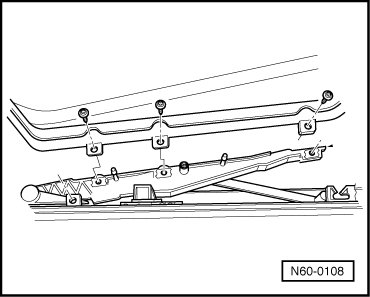

Sunroof Glass Panel
Sunroof with Glass Panel
Sunroof Glass Panel
Removing
- Tilt open the sunroof.
- Slide sun shade rearward.
- Unclip the boot from the lower strip beginning at the rear.

- Then unclip the boot from upper strip beginning at the front.
- Push the boot back - arrow - out of the oblong hole and remove it.
- Remove bolts (three per side) 4.5 Nm.

- Remove sunroof upward.
• Sunroof must not be driven into "opened" position with glass panel removed because the rain channel is no longer pressed down by the glass panel and may be wedged in roof.
Installing
The panel must be installed in the neutral position (panel closed).
Neutral position:
Marking - arrow - on upper part of rear guide - 1 - must be located on both sides between markings - dimension a - at link guide - 2 -.

Link guide - 2 - must be engaged in guide rail (cannot be moved by hand).
If this is not the case, adjust parallel movement. Refer to --> [ Glass Panel, Adjusting Parallel Movement ] Sunroof with Glass Panel Overview
- Insert sunroof panel from above and screw in bolts (guide rail/panel).
- Lightly tighten the bolts.
• Tighten mounting bolts to 4.5 Nm after panel height adjustment.